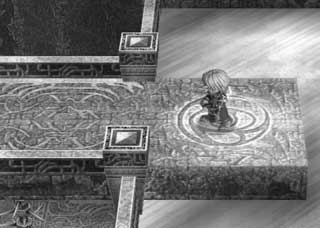
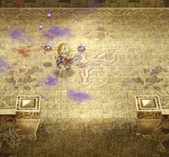

| 概要 | 情報 | 攻略チャート |
| Ys ORININ 攻略へ |
| 邪神像を浄化 女神像のある場所から左の出入り口へ移動する マップ左にある階段を移動し、宝箱から「5000SP」入手  「マスク・オブ・アイズ」を装備し、見えない通路を移動 見えない通路を渡り、宝箱から「エビルリング」を入手 先ほどの足場から下へ落ちて、宝箱から「大理石の鍵」を入手 女神像の場所から上の出入り口へ移動する (右のマップへ) 宝箱から「ロダの実」を入手する 女神像のある場所から右の出入り口へ移動する 赤い魔物(ワーム)を倒し、壁を消す 壁があった道を進む (次のマップへ)  風の魔法で下へ降り、「大理石の鍵」で扉を開ける |
| 赤い魔物を倒し、宝箱から「金のブレスレット」を入手 (二段ジャンプを取得) 左へ移動し、宝箱から「ルビー」を入手 (風の魔法とジャンプのタイミングが重要) 女神像のあるマップから右の出入り口へ移動 マップも右の方へ行く ルーに「ロダの実」をあげる (「シルフェンブーツ」を入手) |
| (次のマップへ) (回廊へ出る) レアとのイベント 「銀の鈴」を入手 (次のマップへ) (次のマップへ) 床スイッチを押し、格子戸を上げる 格子戸の中出入り口へ 宝箱から「セルセタの秘薬」入手 床スイッチを押しエレベーターを動かしつつ、上へ移動する マップ右端の宝箱から「5000SP」入手 (次のマップへ) (次のマップへ) 右側の階段を進む ラドの塔でのイベント ラドの塔へ移動 |